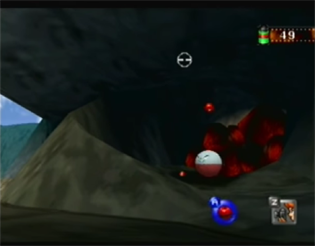
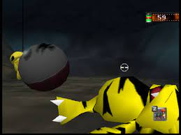

Pokemon Snap: The Tunnel
On this ocasion I wanted to exemplify what pushed Pokemon Snap's level design beyond generic yet good decision-making. For those unaware, Pokemon Snap is
a game released for the Nintendo64, where the player traversed multiple courses to take the best pictures possible of the local fauna. Whenever a course would
be completed, Professor Oak would evaluate the quality of the photos, and give the correspondant amount of points. All courses have a predefined route, and depending on
the amount of points the player has obtained, multiple items can be obtained to interact with the environment in interesting and creative ways.
The Tunnel: post-tutorial content
The Tunnel is the game's second level, and serves as the most important check in the entire game. If the player hasn't understood that environmental interaction is a central element, they won't be able to progress, since the next level is not limited by amount of points in this case, but by throwing an item to an Electrode, causing it to explode, destroying a wall that leads to the Volcano stage (left image).
How did the designers make sure that this premise was evident to every player? Easy: in contrast with the first level, which doesn't have a lot of interaction, this entire level is all about it. The most evident measure taken was to add a bunch of Electrodes at the beginning of the level, and scripting one of them exploding. After that, the player has a generous time window to interact with the other ones, which at that point essentially means throwing them apples. Doing so will cause the aforementioned explosion, solidifying that information unequivocally.
To not feel too forced, the level has layers that will keep the player's mind distracted from the obvious connection they have to make: to begin with, the entire scripted scene puts more emphasis in an Electabuzz involved in the explosion, since it feels like a rarer sight than the Electrode (one was already seen before, so the player already had a chance to take a picture). Additionally, when the detonation takes place, a bunch of Kakuna momentarily fall down from the ceiling, reinforcing the idea of environmental interaction, and encouraging the player to try it for themselves to get a better picture of the fleeting cocoons. And of course, there's all the content between this segment of the level, which is almost at the beginning, and the mandatory progression check, which is at the end of level, amdist which there is no other Electrode to interact with.
Why this game is peak Pokemon
Up to now, I haven't explained anything that seems particularly worth pointing out. The level, as any other, has its goals, and is consequent on laying itself as to accomplish them. What I find interesting is how they contextualized it. Maybe I'm giving them too much credit, and this was the only "logic" solution to the problem, but seeing how the sequel designed many of its interactions... Not to throw shade to New Pokemon Snap, but I think there is (are, actually) a clear reason why that game feels so less about the Pokemon than the original did.
On the basis of making a level that teaches player about environmental interaction, Electrode seems an odd choice at first glance. It would be hard to argue that it is a very popular Pokemon. If anything though, he is well-known for being one of the most prominent users of Explosion. Exploding things make for a very obvious way to interact with the surroundings. Where are Electrodes found? In the Pokemon games (up to that point, at least), in power plants. Great, this way we can also add Magnemites to teach the player about interaction between Pokemon. Okay, first gen doesn't have that much more electric Pokemon, what do we do. An abandoned power plant in a cave. We can add Digglets and reinforce other mechanics, with a similar purpose to the Magnemite's dynamic. Also a nice excuse to add the quintessential cave apparition: Zubats, used as surprise moments by having them fly out of shut doors as surprises that maintain tension on slower parts of the level.
This natural flow of decisions is what I think made the original game so interesting: the Pokemon weren't chosen to showcase them, for the player to take a picture, but they were chosen to fulfill the mechanic challenges and puzzles that were at the core of the playability, in a focused manner, one at a time. If you were a Pokémon fan, especulating was a reasonable way to find secrets, for events weren't added as a checklist of tasks to do, but as exciting occasions that took initiative and ingenuity, grounded in the love for the series, and grown into an entertaining experience on its own right. While not applicable to all games, having a very niche target can be used not only to raise the expected game literacy the designers work with, but to offer an experience that recognizes what is beyond the diegesis, and rewards the player for it.